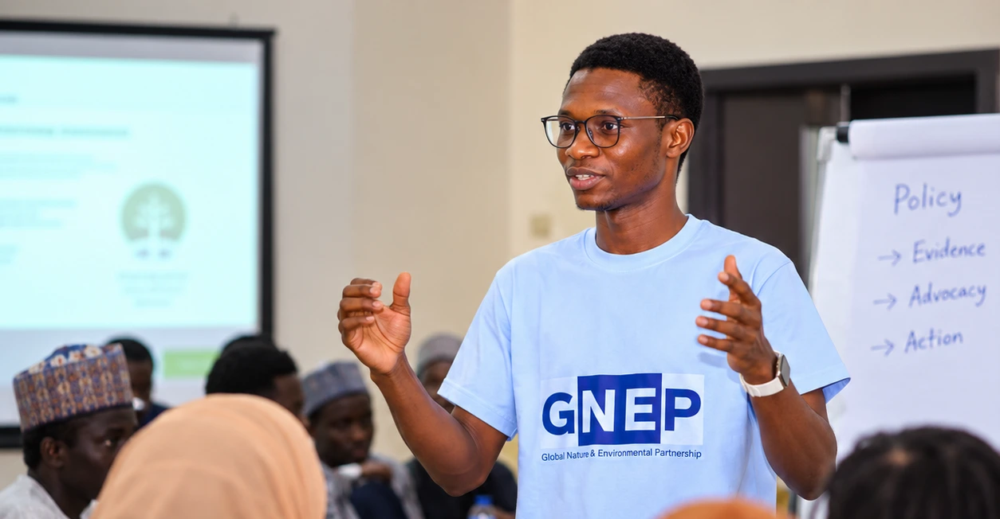

Executive Biography
Mohammed Labaran Sani: A Journey Through Governance, Research and Climate Action
Mohammed Labaran Sani is a Nigerian climate policy researcher, development practitioner, and social entrepreneur whose work focuses on climate governance, adaptation finance, institutional effectiveness, and community-led environmental action in Africa.
With an academic foundation in Political Science and postgraduate training in Climate Change Policy, he works at the intersection of research, public policy, and practical development. His professional journey spans education, public health programme support, entrepreneurship training, environmental advocacy, and youth leadership, reflecting a sustained interest in how institutions can translate policy commitments into meaningful outcomes for communities.
“Ambitious climate commitments mean little if they fail to produce corresponding improvements in the lives of the communities they are intended to protect. Our responsibility is to turn policy ambition into institutional delivery.”
He is the Founder and Project Lead of the Global Nature and Environmental Partnership (GNEP), a youth-led environmental initiative established to advance climate literacy, renewable energy awareness, sustainable livelihoods, and evidence-informed environmental governance. Through GNEP, he seeks to strengthen the participation of young people and civil society organisations in climate policy processes, particularly in underserved communities in Nigeria.
Currently pursuing a Master of Science in Climate Change Policy at the Pan-African University Institute for Water and Energy Sciences, including Climate Change (PAUWES), in Algeria, Sani is developing an interdisciplinary approach to African development challenges. His work connects political institutions, public policy, environmental sustainability, and the economic conditions that shape communities' capacity to respond to climate change.
Academic Journey
Academic Foundations and Intellectual Development
Sani's academic development began with an interest in political institutions, public administration, regional integration, and the processes through which governments make and implement decisions.
Hassan Usman Katsina Polytechnic (2015)
Diploma in Office Technology and Management Studies. The programme provided an early foundation in administration, organisation, communication, and information management, skills that would later support his work in programme coordination and institutional engagement.
Umaru Musa Yar'adua University (2021)
Bachelor of Science in Political Science. His undergraduate studies examined the structures of political authority, public policy, international relations, political economy, development administration, and the relationship between institutions and society.
Undergraduate Thesis: Regional Integration & The African Union
His undergraduate research focused on The African Union (AU), Regional Integration, and the Challenges of Globalisation in the Twenty-First Century. The study examined regional integration as a pathway for African cooperation and development while considering the challenges that shape the continent's position in an increasingly interconnected global system. The thesis, subsequently made available through Zenodo, reflects his early engagement with questions concerning African institutions, regional cooperation, and the implementation of collective development ambitions.
PAUWES – Pan-African University, Algeria (Expected August 2027)
MSc in Climate Change Policy at PAUWES in Tlemcen, Algeria. His postgraduate studies extend his earlier interest in public policy into environmental governance, climate adaptation, mitigation planning, climate finance, and sustainable energy transitions. Through this training, he is developing the capacity to examine climate change as both an environmental challenge and a governance issue shaped by institutional performance, financing arrangements, and policy choices.
His academic direction is increasingly centred on a fundamental question: why do ambitious climate commitments sometimes fail to produce corresponding improvements in the lives of the communities they are intended to protect? By combining political science with climate policy, Sani examines the institutional bottlenecks, financing gaps, and implementation challenges that complicate climate action across Africa.
Field & Industry Impact
Professional Experience and Community Engagement
Sani's professional experience spans education, public health, entrepreneurship development, and environmental action. These roles provided practical exposure to community realities, organisational coordination, and the challenges of programme delivery.
12,000+ Market Women & Youth
Jobberman Nigeria (2023–2024)
As a soft-skills trainer on the Mastercard Foundation-supported initiative across three northern Nigerian states, Sani delivered foundational workplace, entrepreneurship, and financial literacy training, improving economic agency and digital adoption.
Public Health Digitization
eHealth Africa (2024)
Contributed to health data collection, verification, and campaign tracking for child immunisation initiatives. Strengthened his appreciation for data integrity, field coordination, and technology in service delivery.
Educational Mentorship & School Leadership
Between October 2021 and March 2024, Sani worked as a teacher at Shahrab International School in Katsina State. In this role, he was responsible for classroom instruction, curriculum support, and mentoring secondary school students. The experience reinforced his understanding of education as a foundation for individual development and social awareness.
His background in secondary education contributed to his later interest in environmental literacy. Observing the limited presence of climate and environmental issues in formal school curricula, he recognised the need to introduce young people to sustainability concepts early in their educational development.
Institutional Initiative
Founding the Global Nature and Environmental Partnership
In January 2025, Sani founded the Global Nature and Environmental Partnership (GNEP), a youth-led environmental organisation based in Katsina State, Nigeria. The initiative was established to address a persistent gap in African environmental action: the divide between climate policy discussions and community-level realities.
“GNEP was established to ensure that Africa's climate narrative is not just written in conference halls, but enacted through verified local action, youth capacity building, and collaborative institutional partnerships.”
Jan 2025
Founded in Katsina
20 CSOs
Trained in Policy Briefs
150 Trees
Planted with AYINET
Key GNEP Milestones under Sani's Leadership:
-
Policy Brief & Proposal Development Workshop: Co-hosted with The Green Minds Space for 20 civil society representatives in Katsina State, providing hands-on training on drafting policy briefs, competitive funding proposals, elevator pitches, and responsible AI research tools.

Mohammed Labaran Sani facilitating the 2026 Civil Society Policy & Advocacy Workshop in Katsina State.
-
150 Economic Tree Seedling Drive: Joint community restoration drive with the African Youth Initiative Network (AYINET) across Katsina State, promoting green cover and ecosystem regeneration.
-
Institutional Climate Education: Participated in the SUBEB Katsina & UNICEF workshop on Field Work for Climate Change and Green Skills on 19 August 2026.
-
Grassroots Climate Clubs: Initiated the rollout of student environmental clubs across secondary schools in Katsina State to foster early climate literacy.
Academic & Policy Portfolio
Research, Publications, and Policy Contributions
Research is an increasingly central component of Sani's professional trajectory. His work examines climate finance mechanisms, institutional effectiveness, environmental governance, and the implementation of public policies in African contexts.
Policy Paper • Under Review
2026
How Debt Swaps Can Unlock Finance for Climate Adaptation in Africa
Author: Mohammed Labaran Sani
Examines the potential of debt-for-climate and debt-for-adaptation swaps to create fiscal space for vulnerable African nations, relieving sovereign debt distress while funding resilient infrastructure.
Working Paper
In Development
Rethinking Climate Finance in Africa: Governance, Institutional Capacity, and Adaptation Outcomes
Author: Mohammed Labaran Sani
Considers the institutional and fiduciary conditions that influence the absorptive capacity and impact of multilateral climate finance on community-level resilience.
Comparative Study
PAUWES Research
Institutional Determinants of Delayed Implementation of National Climate Plans: Comparative Evidence from Nigeria and Cameroon
Author: Mohammed Labaran Sani
A comparative institutional analysis exploring why nationally determined contributions (NDCs) encounter bureaucratic delays and policy inertia in Central and West Africa.
Spatial-Temporal Analysis
PAUWES Research
Evaluating Climate Policy Effectiveness in Algeria and Nigeria: A Spatio-Temporal GHG Emissions Analysis (2000–2025)
Author: Mohammed Labaran Sani
Combines satellite data, GIS mapping, and policy timeline benchmarking to evaluate how national mitigation frameworks correlate with emission trajectories in two major oil-producing African states.
Fellowship & Training
April 2026 • Johannesburg
Africa Youth Portal Research Training Programme
South African Institute of International Affairs (SAIIA), South Africa
Advanced training in policy evidence synthesis, translating academic research into actionable policy briefs, and engaging high-level African decision-makers.
Conference Presentation
April 2026
Climate Vulnerability, Education, and Nation-Building: Quantitative Evidence from Katsina State, Nigeria
2nd International Conference of the Faculty of Arts & Social Sciences, Federal University Dutse
Co-presented quantitative findings demonstrating how extreme weather impacts school attendance and social cohesion in arid border regions.
Monograph / Thesis (Zenodo)
2021 • Open Access
The African Union (AU), Regional Integration, and the Challenges of Globalisation in the Twenty-First Century
BSc Thesis, Umaru Musa Yar'adua University • Zenodo Archive
Investigates the institutional efficacy of the African Union in orchestrating regional economic integration amidst shifting geopolitical dynamics.
Strategic Outlook
Vision for African Climate Governance
Sani's long-term professional commitment centres on improving the effectiveness of climate governance, public administration, and public policy delivery across Africa.
“For Sani, the future of African climate governance will depend partly on the ability of African researchers, policymakers, civil society organisations, and young leaders to develop solutions informed by evidence and grounded in the continent's institutional and social realities.”
Core Strategic Priorities:
-
Climate Policy Practice Platform: Establishing a Pan-African collaborative hub linking young researchers, civil society actors, and public institutions to co-create actionable policy briefs on adaptation finance and energy transition.
-
Evidence-Informed Governance: Promoting the rigorous use of geospatial data, climate analytics, and AI tools to track environmental spending and ensure funds reach vulnerable communities.
-
Community-Driven Nature Solutions: Scaling youth-led agroforestry, indigenous seed conservation, and climate clubs across schools in the Sahel and Sudan-Guinea savannah belts.
Guiding Principle:
“The measure of progress lies in whether knowledge informs decisions, whether institutions fulfil their responsibilities, and whether the benefits of public policy reach the people for whom they are intended.”